Los diagramas de flujo son una herramienta que permite representar visualmente qué operaciones se requieren y en qué secuencia se deben efectuar para solucionar un problema dado.
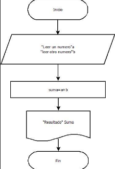Te presentamos los terminos basicos de Pensamiento Algoritmico
Diagramas de flujo
El pseudocódigo
es una herramienta utilizada en el diseño de algoritmos que permite representar la lógica de un programa de manera informal y legible, sin seguir la sintaxis de un lenguaje de programación específico. .
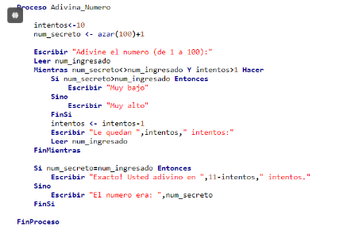Variables
Espacios de almacenamiento que almacenan valores que pueden cambiar.
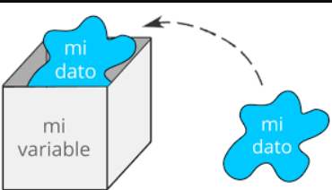Descomposición
Dividir un problema complejo en partes más manejables.
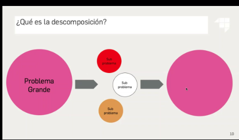Condicionales
Estructuras que permiten tomar decisiones basadas en condiciones (if, else)..
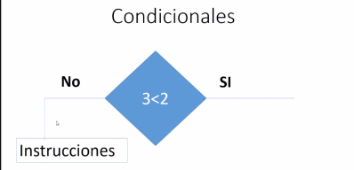Secuenciación
Organizar instrucciones en un orden específico para alcanzar un resultado.
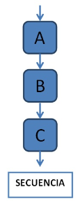Complejidad
Medida que indica cuán complicado es un algoritmo, generalmente en relación con el tiempo o el espacio requerido.
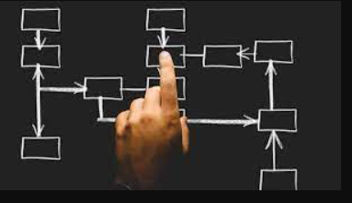Algoritmo
Conjunto de pasos o instrucciones bien definidas para resolver un problema específico.
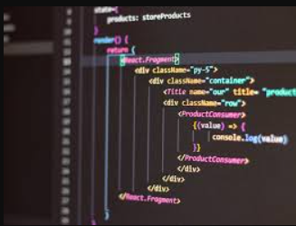Lógica
Razonamiento estructurado que se utiliza para analizar problemas y desarrollar algoritmos.

Transición
Cambio de un estado a otro dentro de la lógica de un algoritmo, especialmente en estructuras de control.
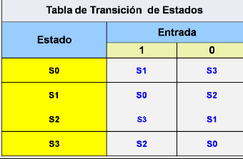Pensamiento computacional
es un enfoque para resolver problemas que implica descomponerlos en partes más manejables, identificar patrones, abstraer información relevante y diseñar algoritmos o secuencias de pasos para alcanzar una solución. .

Optimización
Proceso de mejorar el rendimiento de un algoritmo para que sea más eficiente en tiempo o recursos.
Abstracción
Técnica que consiste en simplificar un problema al enfocarse en los aspectos relevantes y ocultar la complejidad.
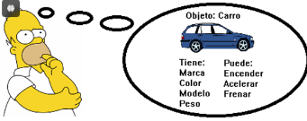Análisis
Evaluación y descomposición de un problema para entender su estructura y encontrar soluciones..
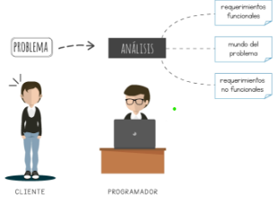Datos
Información que se procesa y se manipula dentro de un algoritmo.
Deducciones lógicas
Las deducciones lógicas son procesos mediante los cuales se obtiene una conclusión a partir de premisas o información ya establecida. Se utilizan en matemáticas, filosofía, programación y diversas áreas del conocimiento.
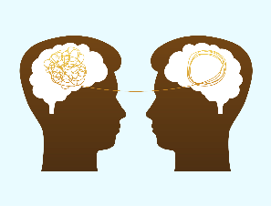